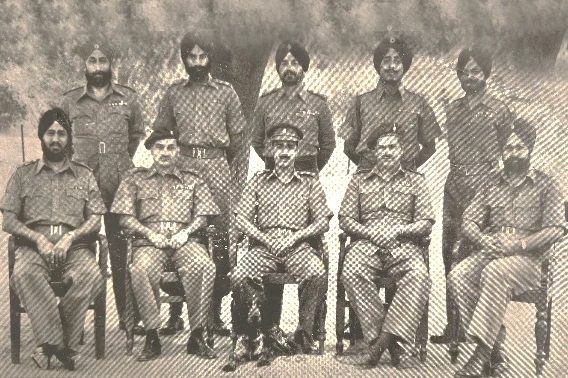
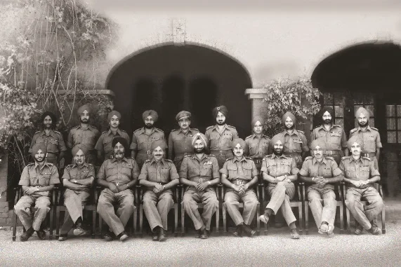
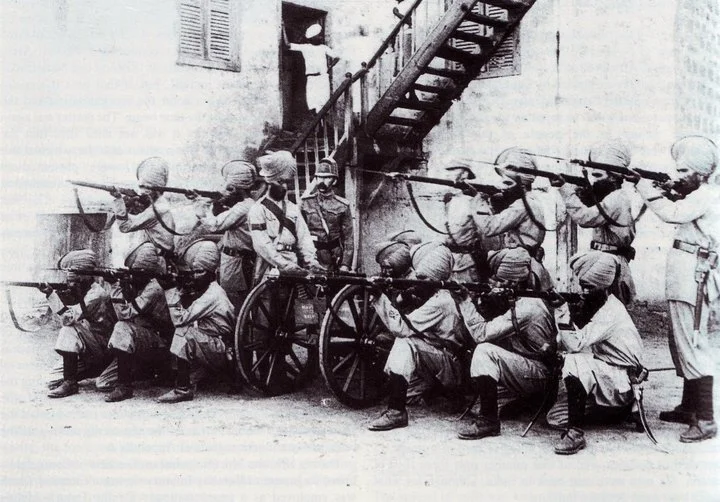
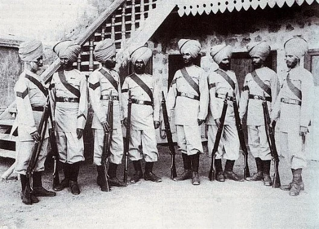
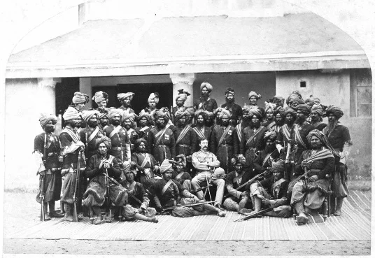
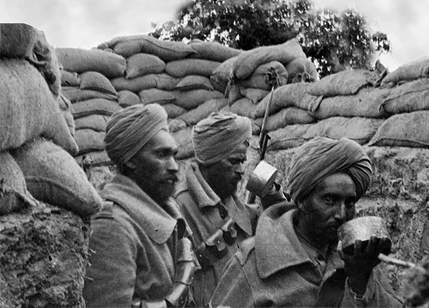
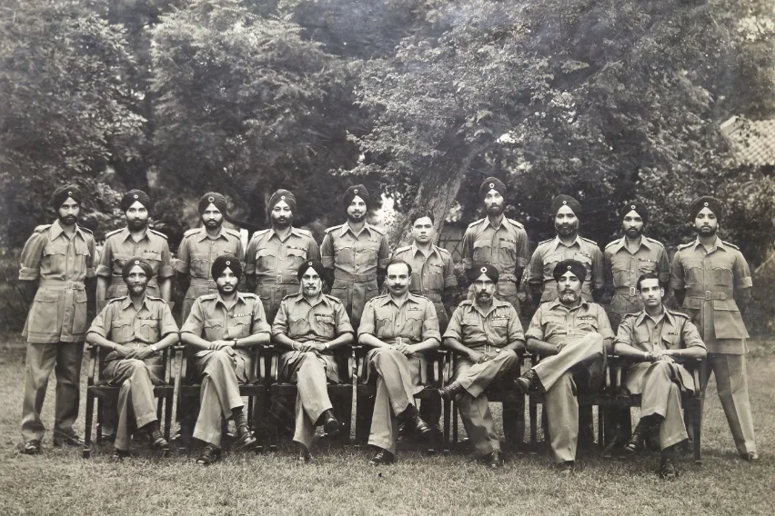
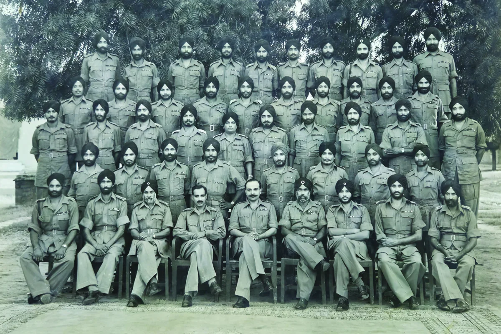

The XXXV Sikhs, now The SIKH Regimental Centre, was raised on April 29, 1887, at Ferozepore by Lieutenant Colonel D.W. Inglish. Composed primarily of Jat Sikhs from north of the Sutlej River, the battalion was armed with Long Rifles. It served in Nyasaland, now Malawi, from 1893 to 1895, deployed to Egypt and Sudan in 1896, and took part in the Siege of Malakand in 1897. During World War I, it served on the North-West Frontier with the 2nd Rawalpindi Division, later fighting in the Third Anglo-Afghan War in 1919. Under the 1922 re-organization, it was renamed the 10th Battalion, 11th Sikh Regiment, acting as a 'Training Battalion' to prepare active Sikh soldiers. In 1945, it was officially designated as The SIKH Regimental Centre.
Scan to view this art record in Chrome on your phone.